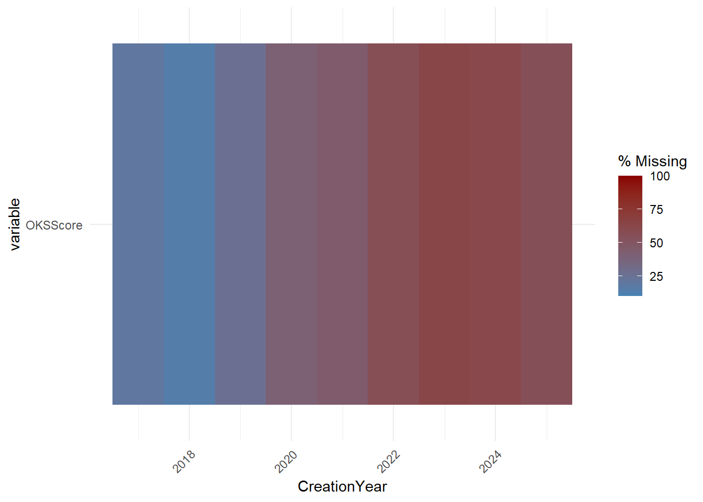
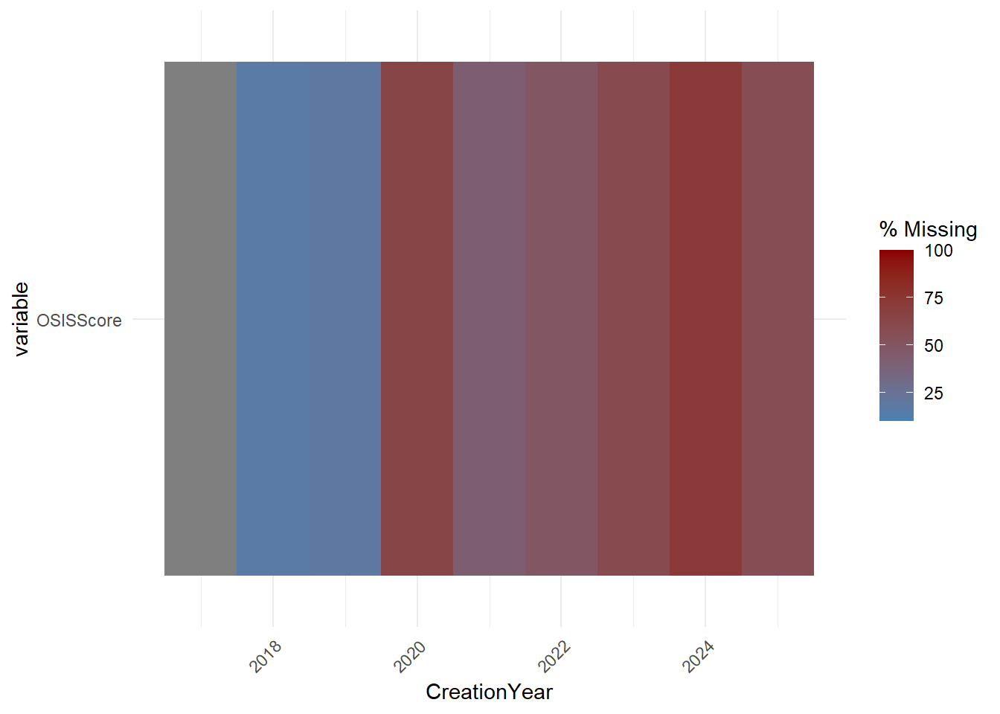
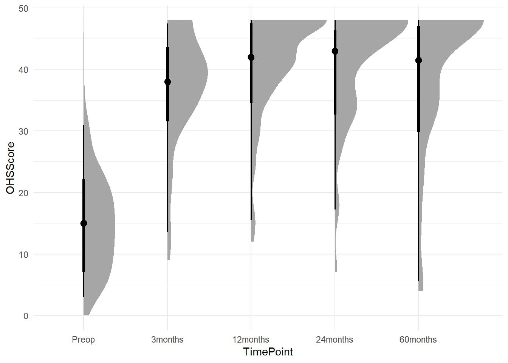
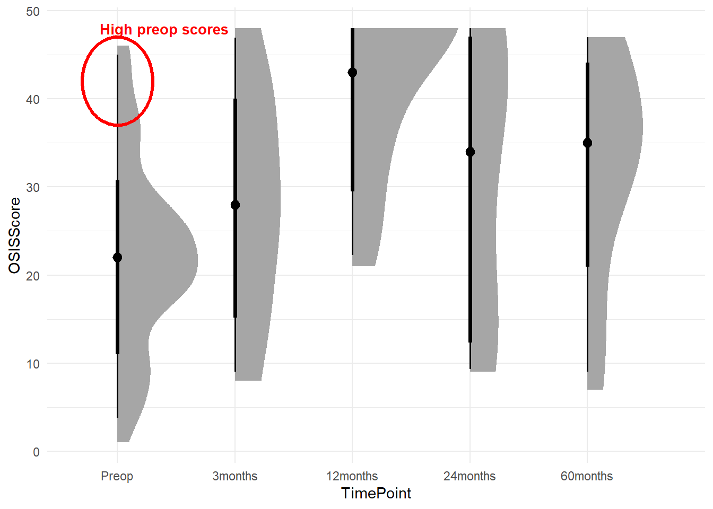

The following analysis is a report on the activity, quality and data contained in the SHARKS registry [wiki]
Analysis packages were loaded initially into the R environment.
Access to the SHARKS datasets was pre-authorised.
A function was generated to retrieve files using the googledrive package, to call on later in the analysis for processing data imports.
Data was retrieved from live database tables. Source files were specified and stored as global variables to call on in further functions.
A static registry snapshot was retrieved and formatted based on the fixed date of preparation of the snapshot (30-Jun-2025).
2 Context
Engagement to design and implement a department registry at QEII Hospital commenced in 2016 as a private-public partnership between the Department and EBM Analytics. The registry launched as a single-surgeon pilot in July 2017 within the Department of Orthopaedics, with Chris Bell as the Principal Investigator. At commencement, a series of shoulder and knee cohorts were designed and implemented that reflected the practice of the project PI. In brief, the recruitment and data collection processes were based largely on paper (initial consent and questionnaire pack) and followup scores completed by paper or, in a minority of cases, electronic capture through web-based forms.
In June 2019 the registry was expanded to the current cohort structure, with a hip arthroplasty and additional knee cohort added (Knee Deformity), as well as contributions from other consultants in the Department (N = 4 in total). At this time, Lorenzo Calabro took over operational direction of the Department research activities and the newly renamed SHARKS (Shoulder, Hip Arthroplasty and Knee Surgery) Registry. A wiki was commissioned (referred to from here as Version 1) to document the registry and associated activities. At around this time, a paper was published describing the initial implementation and quality results.
Lee, B., Ebrahimi, M., Ektas, N., Ting, C. H., Cowley, M., Scholes, C., & Bell, C. (2020). Implementation and quality assessment of a clinical orthopaedic registry in a public hospital department. BMC Health Services Research, 20(1), 393.
Restrictions on theatre lists and in-person clinics began from ~April 2020 with the declaration of a state public health emergency in January 2020 due to the COVID-19 pandemic, with rolling lockdowns and restrictions continuing into 2023. Throughout this period, followup analyses of registry data was conducted, with efforts to recruit new patients and followup scores by phone. Planning for the second iteration (Version 2) of the Registry commenced in 2021, with a major amendment to the HREC approvals submitted October 2021.
Version 2 of the SHARKS registry moved all recruitment and data collection processes to an electronic platform, including opt-in patient consent. It also included coverage for all eligible cases within the Department and lifted restrictions for recruitment and monitoring. Patient communication was consolidated to sms and a website interface provided for staff data collection in clinics and theatres. Approval for final implementation of the system, and the ongoing support contract was provided in May 2024, with initial rollout in August 2024 and full rollout to all Department activities in October 2024. A wiki for Version 2 of the Registry was also commissioned in 2024.
3 Engagement
The current iteration of the SHARKS registry commenced in August 2024.
Do patients engage with attempts to recruit them prior to initial clinic consults?
Since commencement of SHARKSv2, the system has attempted to recruit 3390 individuals in the Registry with sms. Of those, 1222 engaged with the link provided and attempted to screen themselves into the Registry, an engagement rate of 36%.
Of those engaging with the invitation, 69.3% screened themselves to the consent form (N = 847), but only 62.2% of this subgroup (N = 527) provided consent to participate.
Do Department staff engage with the registry interface?
SHARKSRegistry.com traffic Nov 2024 - Apr 2025
Figure 1
Do Department staff engage with records of new patients flagged on consult lists?
The rate of newly added records not actioned in clinic is extremely high (N = 456), which is a 15.2% engagement rate with newly added records.
The number of clinic forms for returning patients is also low (N = 112) relative to the number of returning records with clinic appointmentss (N = 5413).
The rate of returned intraoperative forms is also low, with 72 forms returned from 221 scheduled cases (32.6%) performed since implementation of SHARKSv2.
In addition, there are 387 cases that remain in the General cohort and have not been recategorised based on clinic input.
4 Recruitment Flow by Region
Flowcharts as per STROBE (Vandenbroucke et al. 2007) and RECORD (Benchimol et al. 2015) guidelines were generated for each region (shoulder, hip, knee) enrolled into the Registry. Followup was set to eligibility at 12months.
Figure 2: Flowchart of extraction and followup of sample from the Registry - Allocation by Joint
Figure 3: Flowchart of extraction and followup of sample from the Registry - Shoulder
Figure 4: Flowchart of extraction and followup of sample from the Registry - Knee
Figure 5: Flowchart of extraction and followup of sample from the Registry - Hip
Cumulative recruitment over time was plotted from Registry inception to the present.
Figure 6: Cumulative record creation within SHARKS from inception to present
An acceleration can be observed in Figure 6 where SHARKSv2 was implemented at the end of 2024
5 Missingness and Compliance
5.1 Baseline and Intraoperative
Figure 7: Missingness of baseline PROMs and intraoperative date by registry cohort
Missingness for baseline PROMs (represented by VR12) and intraoperative data is captured in Figure 7. Intraoperative data was captured slightly differently between cohorts in the previous system, so multiple fields have been utilised to illustrate intraoperative capture across cohorts.
Overall, there are variable response rates for baseline scores across cohorts. This may reflect variable engagement during consultant clinics. The poor compliance for KneeDeformity cases reflects a potential issue for enrolling patients with KneeArthritis more broadly. Historically, emphasis has been made on enrolling total joints into the registry, however in reality KneeDeformity cases are more like other non-arthroplasty cases of KneeArthritis, which may be overlooked in clinic.
5.2 Patient-reported Outcomes by TimePoint
Figure 8: Missingness of Oxford Knee Score by Timepoint in the Knee Arthritis cohort
Figure 9: Missingness of Oxford Hip Score by Timepoint in the Hip Arthroplasty cohort
Figure 10: Missingness of IKDC2000 Score by Timepoint in the Tibiofemoral Instability cohort
Figure 11: Missingness of Oxford Shoulder Instability Score by Timepoint in the Glenohumeral Instability cohort
The cumulative results of the Registry illustrate difficulty in engaging patients beyond short term followup. The Tibiofemoral Instability cohort (Figure 10) bucks this trend at 12months followup, largely due to previous work to this cohort using phone calls. The 9-month followup has only recently been implemented as part of SHARKSv2 and auditing rules will be adjusted in future audits to reflect varied eligibility criteria for this timepoint.
5.3 Baseline by Year

Figure 12: Missingness of Baseline Oxford Knee Score by Year in the Knee Arthritis cohort
Figure 13: Missingness of Baseline Oxford Hip Score by Year in the Hip Arthroplasty cohort
Figure 14: Missingness of Baseline IKDC2000 by Year in the Tibiofemoral Instability cohort

Figure 15: Missingness of Baseline Oxford Shoulder Instability Score by Year in the Glenohumeral Instability cohort
The introduction of SHARKSv2 has begun to improve the baseline capture of cohort-specific scores in the KneeArthritis cohort (Figure 12), as well as the HipArthroplasty (Figure 13)and GHInstability (Figure 15) cohorts. However, because the system now separates the questionnaires between the General pack that patients receive prior to their initial clinic appointment and the cohort-specific questionnaire (e.g. IKDC), the short turnaround for TFInstability surgeries is degrading the capture rate for baseline IKDC in this cohort. This is illustrated by the increased missingness in baseline IKDC (Figure 14). It is speculated that Knee Stabilisation cases appearing on the theatre list are being recategorised in the correct cohort too late for PROMs capture.
In the new system, patients receiving a surgery booking will need to be reminded that they will receive an additional questionnaire that is more specific to their condition prior to their surgery.
6 Cohort Analysis
The VR12 is a general health questionnaire that is presented to all patients enrolled in the registry.
Figure 16: Summary of VR12-PCS at baseline by cohort
Figure 17: Summary of VR12-MCS at baseline by cohort
Between-cohort variability is observed for the Physical Component Score of the VR12, but not as pronounced for the Mental Component Score. Most notable is the high variation within all cohorts for both VR12 component scores.
6.1 General
The general cohort is a label for all patients entering into the registry through the invitation link sent prior to their initial clinic appointment.
Figure 18: Summary of Self-reported Medical Comorbidity Questionnaire at baseline by condition type
Figure 19: Summary of EQ5D5L at baseline by condition type
Figure 20: Summary of VR12-PCS at baseline by condition type
Figure 21: Summary of SANE at baseline by condition type
The General cohort captures broad health questionnaires at the point of Registry enrolment and these show some differences between patient-identified conditions. The evaluation of joint function (SANE) shows high variability, regardless of the condition type.
6.2 Knee Arthritis
Figure 22: Summary of OKS by Timepoint
Table 1: Summary of intraoperative variables in Knee Arthritis cohort
Characteristic
N = 9321
TourniquetUse
Intermittent
21 (4.9%)
Not Used
64 (15%)
Released After Closure
45 (11%)
Released Before Closure
295 (69%)
SoftTissueReleaseMedial
Combined release/tighten
1 (0.2%)
Extensive
28 (6.7%)
Minimal
252 (60%)
None
140 (33%)
SoftTissueReleaseLateral
Combined release/tighten
1 (0.2%)
Extensive
14 (3.3%)
Minimal
51 (12%)
None
355 (84%)
SoftTissueReleasePosteriorCapsule
Combined release/tighten
1 (0.2%)
Extensive
1 (0.2%)
Minimal
17 (4.0%)
None
402 (95%)
SoftTissueReleaseAnterior
Combined release/tighten
1 (0.2%)
Minimal
16 (3.8%)
None
404 (96%)
BalanceMethod
Manual
26 (68%)
Navigation
6 (16%)
None
4 (11%)
Robotic
2 (5.3%)
PatellarResurfacing
360 (82%)
AlignmentReference
All IM
5 (1.2%)
IM Femur/EM Tibia
104 (25%)
Navigation
160 (38%)
Other - Patient specific guides
1 (0.2%)
Robotic
153 (36%)
1 n (%)
Assessment of the KneeArthritis cohort reveals that some patients enrolled in the cohort are scoring high on the Oxford Knee Score and that intraoperative data requires backfilling and that there may be sufficient variation in surgical technique to warrant further investigation (e.g. patellar resurfacing, tourniquet use, soft tissue management).
6.3 Tibiofemoral Instability
Figure 23: Summary of IKDC2000 by Timepoint
Overall, the TFInstability cohort mean IKDC score does not reach the reported patient acceptable symptom state (~ 80) on average at up to 2 years followup. Considering the missingness patterns in the data, this could be attributed to patients self-selecting into responding to PROMs or the patients returning to clinic historically to fill in scores have been those having problems after surgery.
The baseline IKDC for ACL injury patients is 47.43.
Characteristic
Overall
N = 5281
Female
N = 1661
Male
N = 3621
IKDCBase
47.4 (12.6)
47.1 (12.9)
47.5 (12.4)
Unknown
257
74
183
AgeAtInitialExam
27.3 (7.9)
27.0 (7.6)
27.5 (8.0)
Unknown
217
58
159
1 Mean (SD)
6.4 Hip Arthroplasty

Figure 24: Summary of OKS by Timepoint
6.5 Glenohumeral Instability

Figure 25: Summary of OSIS by Timepoint
6.6 Satisfaction
Table 2: Satisfaction likert responses for arthroplasty cohorts
Characteristic
GHArthritis
N = 641
HipArthroplasty
N = 3581
KneeArthritis
N = 6411
TreatmentSatisfaction_12months
1
0 (0%)
2 (25%)
6 (18%)
2
0 (0%)
1 (13%)
4 (12%)
3
2 (40%)
1 (13%)
8 (24%)
4
3 (60%)
4 (50%)
16 (47%)
Unknown
59
350
607
1 n (%)
The satisfaction scores were incorporated into SHARKSv2, but have not been available historically as part of the SHARKS configuration in the previous platform.
7 Interpretation
The poor followup can be attributed to the slow rollout of automatic followup of the registry system for records created prior to the introduction of SHARKSv2 - these have been set to inactive to ensure thorough testing of the system prior to contacting patients that have not been engaged with the hospital for some years. Records meeting these criteria have only been set to active as they have returned to clinic since the rollout. In the last week, all of these records have been sent PROMs links and reminders to enable scheduled followup.
The reduction in compliance for TFInstability baseline PROMs (IKDC) is attributed to slow conversion of these cases from the general cohort to the TFInstability cohort and the cohort-specific questionnaire being missed prior to surgery.
The registry database needs backfilling with regards to confirming the surgical status of records added with >500 records in the KneeArthritis cohort alone needing surgery date or theatre data to be entered to provide the necessary context for interpreting PROMs collected. Overall, the registry also includes a number of records that have information indicating an attendance to an initial clinic appointment, but no confirmation that surgery has occurred.
8 Recommendations
The following recommendations are presented for improving the data quality of the SHARKS dataset;
Staff engage with Registry form links presented during daily lists
Ensure that admin forms are completed for all listed appointments in the daily consult list (green table)
Only fill out new entries (bottom red table) if the patient meets the inclusion criteria for the Registry
Ensure that clinic assessment forms (CAF) are completed for all active Registry records
Ensure all theatre forms are completed for listed surgeries meeting the inclusion criteria for Registry
Implement actions to improve patient awareness and engagement with initial consent process
EBMA staff attend the Department to ensure technical barriers are identified and addressed
Increase aqssertiveness with respect to followup of existing records (even without upcoming clinic appointment)
8.1 Estimated Burden
The esimated median time to complete an admin form per appointment is 24 seconds. Per day that translates to 5 minutes per person when the number of appointments is estimated at 50 and the number of staff involved in data collection is 4. It should be noted that about the same amount of time is required to complete fewer (but more detailed) clinic assessment forms for each active registry record. In total, it is estimated that since the introduction of SHARKSv2 that 58.7 hours were required to complete admin forms for all appointments.
References
Benchimol, Eric I., Liam Smeeth, Astrid Guttmann, Katie Harron, David Moher, Irene Petersen, Henrik T. Srensen, Erik von Elm, and Sinad M. Langan. 2015. The REporting of Studies Conducted Using Observational Routinely-Collected Health Data (RECORD) Statement.PLOS Medicine 12 (10): e1001885. https://doi.org/10.1371/journal.pmed.1001885.
Vandenbroucke, Jan P, Erik von Elm, Douglas G Altman, Peter C Gtzsche, Cynthia D Mulrow, Stuart J Pocock, Charles Poole, James J Schlesselman, and Matthias Egger. 2007. Strengthening the Reporting of Observational Studies in Epidemiology (STROBE): Explanation and Elaboration.PLoS Medicine 4 (10): e297. https://doi.org/10.1371/journal.pmed.0040297.